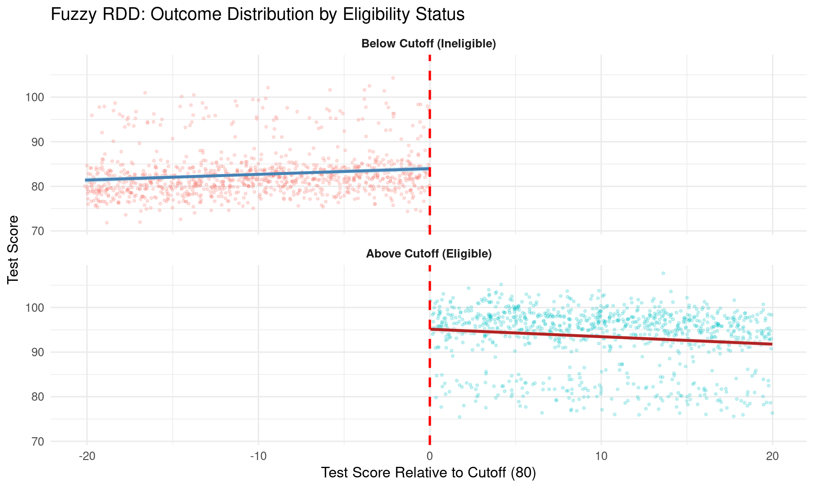
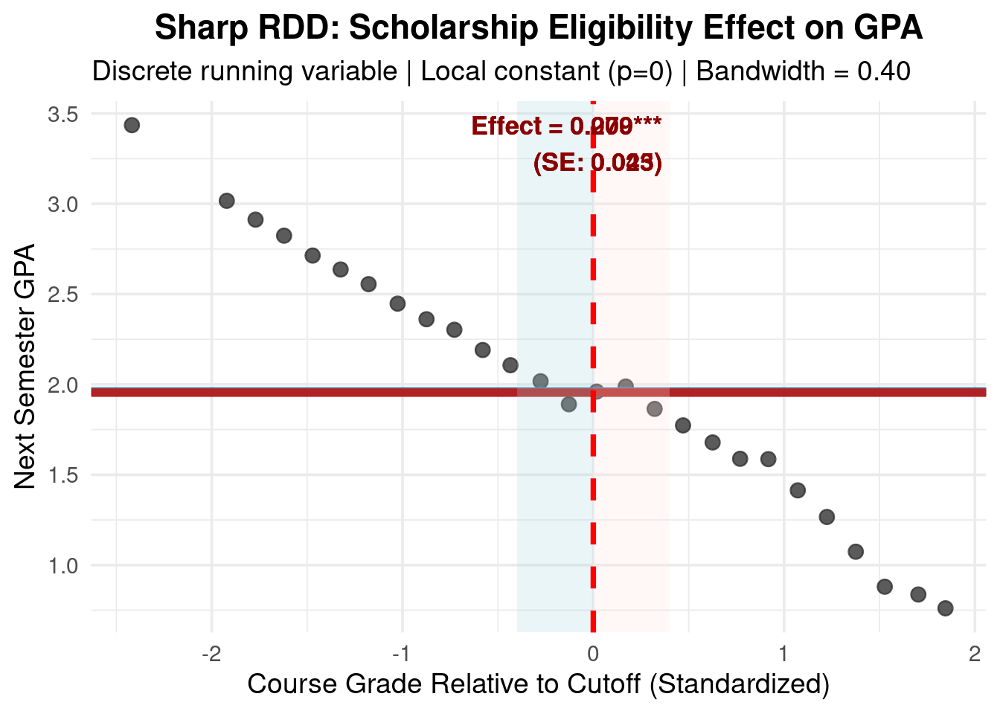
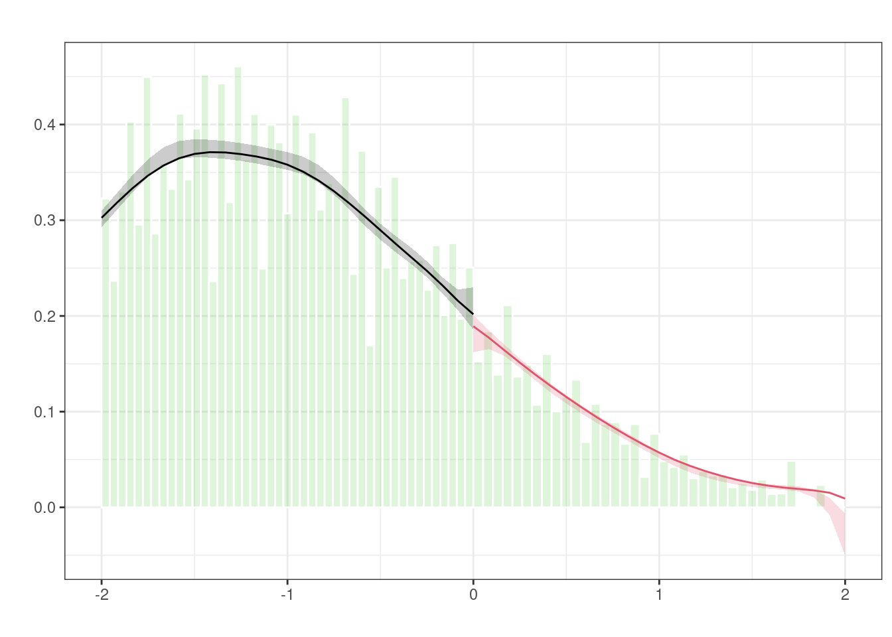
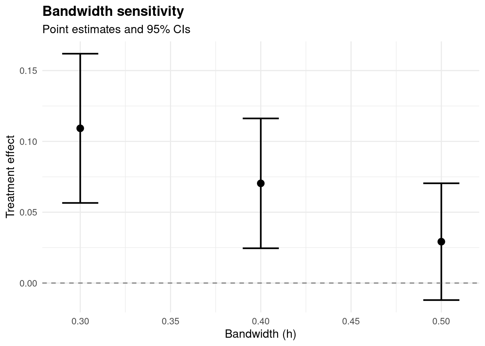
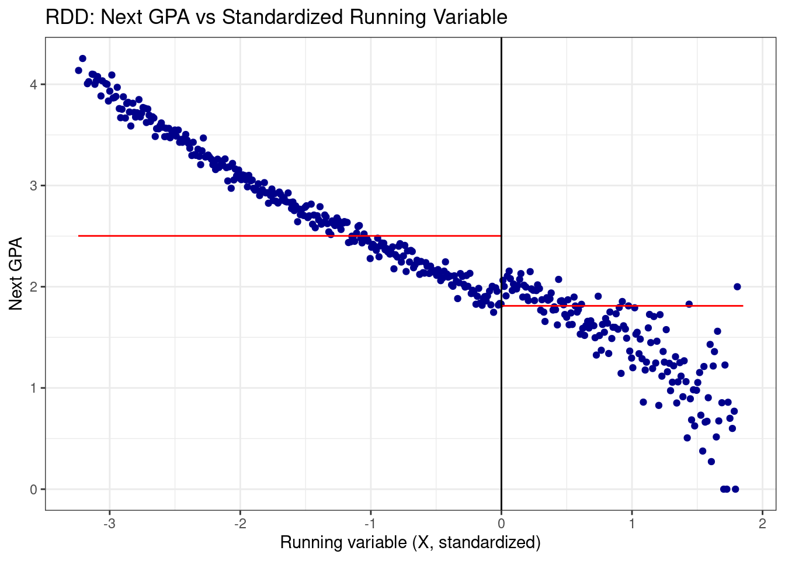

Code
packages <- c(
'tidyverse',
'rdrobust',
'rddensity',
'rdlocrand',
'modelsummary',
'patchwork'
)

This section introduces the Regression Discontinuity Design (RDD), a powerful quasi-experimental method for estimating causal effects when treatment assignment is determined by a cutoff in a continuous running variable. We will cover the core intuition, assumptions, types of RDD, and its strengths and limitations in the context of causal inference.
Regression Discontinuity Design (RDD) is a quasi-experimental method that exploits sharp cutoffs or thresholds in decision rules to estimate causal effects when randomization is infeasible. It leverages the fact that units just above and just below a threshold are likely comparable except for treatment assignment, creating a local randomized experiment.
Imagine a policy that provides scholarships to students scoring ≥80 on an exam. Students scoring 79.9 vs. 80.1 are nearly identical in ability (assuming measurement error/no manipulation), yet one receives treatment and the other doesn’t. RDD compares outcomes locally around the cutoff to isolate the treatment effect:
\[ \tau = \mathbb{E}[Y_i(1) - Y_i(0) \mid X_i = c] \]
where: - \(Y_i(1), Y_i(0)\) = potential outcomes with/without treatment - \(X_i\) = running variable (e.g., test score) - \(c\) = cutoff threshold
Continuity of Potential Outcomes:
\(\mathbb{E}[Y_i(0) \mid X_i = c^-] = \mathbb{E}[Y_i(0) \mid X_i = c^+]\)
All confounders and potential outcomes vary smoothly at the cutoff—only treatment assignment jumps discontinuously.
Known & Non-Manipulable Cutoff:
The threshold must be exogenous. If agents can manipulate \(X_i\) to cross \(c\) (e.g., retaking exams to hit 80), validity breaks down (check with McCrary density test).
Correct Functional Form:
The relationship between \(X_i\) and outcomes must be properly modeled near \(c\) (often using local linear regression or polynomials).
| Type | Treatment Assignment | Estimand | Example |
|---|---|---|---|
| Sharp RDD | Deterministic: \(D_i = \mathbb{I}(X_i \geq c)\) | ATE at cutoff | Automatic scholarship at score ≥80 |
| Fuzzy RDD | Probabilistic jump at \(c\) (non-compliance) | LATE (Local Average Treatment Effect) | Eligibility at score ≥80, but some eligible students don’t enroll |
Fuzzy RDD requires instrumental variable estimation (e.g., 2SLS) using assignment as an instrument for actual treatment.
| Strengths | Limitations |
|---|---|
| Strong internal validity when assumptions hold | Only estimates local effects at cutoff (limited external validity) |
| Transparent identification strategy | Requires large samples near cutoff for precision |
| Immune to confounding if continuity holds | Vulnerable to manipulation of running variable |
| No need for explicit covariate adjustment | Bandwidth/model specification choices affect results |
RDD provides credible causal identification without randomization when: - A clear administrative/physical threshold exists - Manipulation is implausible - Sufficient data density exists near \(c\)
It bridges observational studies and RCTs—offering stronger causal claims than regression adjustment alone, while being feasible in real-world policy settings where randomization is unethical or impractical.
This tutorial provides a production-ready workflow for RDD analysis in R, combining theory, implementation, diagnostics, and real-world applications. We’ll use the modern rdrobust ecosystem (Calonico et al.)—the current gold standard for RDD inference.
packages <- c(
'tidyverse',
'rdrobust',
'rddensity',
'rdlocrand',
'modelsummary',
'patchwork'
)#| warning: false
#| error: false
# Install missing packages
new_packages <- packages[!(packages %in% installed.packages()[,"Package"])]
if(length(new_packages)) install.packages(new_packages)# Load packages with suppressed messages
invisible(lapply(packages, function(pkg) {
suppressPackageStartupMessages(library(pkg, character.only = TRUE))
}))# Check loaded packages
cat("Successfully loaded packages:\n")Successfully loaded packages: [1] "package:patchwork" "package:modelsummary" "package:rdlocrand"
[4] "package:rddensity" "package:rdrobust" "package:lubridate"
[7] "package:forcats" "package:stringr" "package:dplyr"
[10] "package:purrr" "package:readr" "package:tidyr"
[13] "package:tibble" "package:ggplot2" "package:tidyverse"
[16] "package:stats" "package:graphics" "package:grDevices"
[19] "package:utils" "package:datasets" "package:methods"
[22] "package:base" set.seed(12345)Fuzzy RDD accounts for imperfect compliance at the cutoff. We’ll simulate a scenario where eligibility for a scholarship is determined by scoring ≥80, but not all eligible students enroll, and some ineligible students manage to enroll.
# Ensure n and cutoff are defined first
n <- 2000
cutoff <- 80
sim_fuzzy <- tibble(
score = runif(n, min = 60, max = 100) + rnorm(n, sd = 0.1),
eligible = as.integer(score >= cutoff), # Assignment based on cutoff
# Use scalar n (not n()) inside case_when
enrolled = case_when(
eligible == 1 ~ rbinom(n, 1, 0.80), # Note: n (scalar), not n()
eligible == 0 ~ rbinom(n, 1, 0.10)
),
# Potential outcomes
y0 = 50 + 0.8 * score - 0.005 * score^2 + rnorm(n, sd = 3),
y1 = y0 + 15, # True effect of enrollment
score_centered = score - cutoff,
outcome = ifelse(enrolled == 1, y1, y0)
) %>%
select(-y0, -y1)
# Verify compliance rates
sim_fuzzy %>%
group_by(eligible) %>%
summarise(
n = n(),
enrollment_rate = mean(enrolled),
.groups = "drop"
)# Create combined dataset for dual-axis plot
plot_data <- sim_fuzzy %>%
mutate(
side = ifelse(score_centered < 0, "Below Cutoff", "Above Cutoff")
) %>%
group_by(bin = cut(score_centered, breaks = seq(-20, 20, by = 2))) %>%
summarise(
score_mid = mean(score_centered),
enroll_rate = mean(enrolled),
avg_outcome = mean(outcome),
.groups = "drop"
)
# Primary plot (outcome)
p <- ggplot(plot_data, aes(x = score_mid)) +
geom_point(aes(y = avg_outcome, color = score_mid < 0),
size = 2.5, alpha = 0.8) +
geom_smooth(data = filter(sim_fuzzy, score_centered < 0),
aes(x = score_centered, y = outcome),
method = "lm", se = TRUE, color = "steelblue",
linewidth = 1.3, fill = "lightblue") +
geom_smooth(data = filter(sim_fuzzy, score_centered >= 0),
aes(x = score_centered, y = outcome),
method = "lm", se = TRUE, color = "firebrick",
linewidth = 1.3, fill = "mistyrose") +
geom_vline(xintercept = 0, linetype = "dashed", color = "red", size = 1) +
labs(title = "Fuzzy RDD: Integrated Visualization",
x = "Test Score Relative to Cutoff",
y = "Test Score (Outcome)") +
scale_color_manual(values = c("steelblue", "firebrick"), guide = "none") +
theme_minimal(base_size = 14)
# Add secondary axis for enrollment probability (conceptual only - requires manual scaling)
# Note: True dual axes require careful scaling; better to use facets for accuracy
# Recommended alternative: Faceted view
p_facet <- ggplot(sim_fuzzy, aes(x = score_centered)) +
# Raw points with transparency
geom_point(aes(y = outcome, color = factor(eligible)),
alpha = 0.2, size = 0.8, show.legend = FALSE) +
# Local linear fits with CI
geom_smooth(data = filter(sim_fuzzy, score_centered < 0),
aes(y = outcome), method = "lm", se = TRUE,
color = "steelblue", linewidth = 1.2, fill = "lightblue") +
geom_smooth(data = filter(sim_fuzzy, score_centered >= 0),
aes(y = outcome), method = "lm", se = TRUE,
color = "firebrick", linewidth = 1.2, fill = "mistyrose") +
geom_vline(xintercept = 0, linetype = "dashed", color = "red", size = 1) +
facet_wrap(~ eligible, ncol = 1,
labeller = labeller(eligible = c("0" = "Below Cutoff (Ineligible)",
"1" = "Above Cutoff (Eligible)"))) +
labs(title = "Fuzzy RDD: Outcome Distribution by Eligibility Status",
x = "Test Score Relative to Cutoff (80)",
y = "Test Score") +
theme_minimal(base_size = 13) +
theme(strip.text = element_text(face = "bold"))
print(p_facet)
First-stage effect (eligibility → enrollment): 0.731 0.72 0.72 Reduced-form effect (eligibility → outcome): 10.892 10.795 10.795 LATE estimate: 14.91 14.985 14.985 # Direct fuzzy RDD estimation (equivalent)
rdd_fuzzy <- rdrobust(
y = sim_fuzzy$outcome,
x = sim_fuzzy$score,
c = cutoff,
fuzzy = sim_fuzzy$enrolled # Specify treatment variable for fuzzy RDD
)
summary(rdd_fuzzy)Call: rdrobust
Fuzzy RD estimates using local polynomial regression.
Number of Obs. 2000
BW type mserd
Kernel Triangular
VCE method NN
Left Right
Number of Obs. 1020 980
Eff. Number of Obs. 365 380
Order est. (p) 1 1
Order bias (q) 2 2
BW est. (h) 7.666 7.666
BW bias (b) 12.124 12.124
rho (h/b) 0.632 0.632
Unique Obs. 1020 980
First-stage estimates.
=====================================================================
Point Robust Inference
Estimate z P>|z| [ 95% C.I. ]
=====================================================================
Rd Effect 0.728 10.797 0.000 [0.591 , 0.853]
=====================================================================
Treatment effect estimates.
=====================================================================
Point Robust Inference
Estimate z P>|z| [ 95% C.I. ]
---------------------------------------------------------------------
RD Effect 15.000 17.636 0.000 [13.322 , 16.653]
=====================================================================Key insight: Fuzzy RDD estimates the Local Average Treatment Effect (LATE) for compliers—students who enroll because they were eligible.
We’ll analyze a real sharp RDD from Cattaneo, Idrobo & Titiunik (2024) using course grades as the running variable and scholarship eligibility as treatment. Although this is a sharp RDD (deterministic treatment assignment), I’ll demonstrate both:
Primary analysis: Sharp RDD with discrete running variable (actual data structure)Educational extension: Simulated non-compliance to illustrate fuzzy RDD conceptsThe data are drawn from Lindo, Sanders, and Oreopoulos (2010), who examine the impact of an academic probation policy using administrative records from students at a large Canadian university.
Under the policy, students whose term GPA falls below a specific threshold are placed on academic probation (Z = 1). They must then raise their GPA in the following term or risk suspension. The analysis focuses on how placement on probation affects students’ GPA in the subsequent term (the outcome Y).
The study employs a regression discontinuity design, with the running variable X defined as the negative distance between a student’s prior-term GPA and the probation cutoff. This means: - X > 0 for students just placed on probation (Z = 1), - X < 0 for students just above the threshold (Z = 0), - and the cutoff is at X = 0.
The authors explore heterogeneity in the probation effect by considering several potential moderators (W):
Gender (an indicator for male),Age at university entry (age_at_entry),An indicator for being born in North America (bpl_north_america),Total credits completed in the first year (totcredits_year1),Campus indicators (for each of three campuses: loc_campus 1, 2, and 3),High school GPA, expressed as a percentile rank relative to the university’s incoming class (hsgrade_pct).library(tidyverse)
library(rdrobust)
library(rddensity)
# Load data EXACTLY as specified
data <- read.csv("https://raw.githubusercontent.com/rdpackages-replication/CIT_2024_CUP/refs/heads/main/CIT_2024_CUP_discrete.csv")
y <- data$nextGPA
x <- data$X / sd(data$X) # Standardize running variable
c <- 0Diagnosing discreteness is crucial because it affects bandwidth selection and estimation strategy. The running variable in this dataset is discrete (course grades), which violates the continuity assumption of standard RDD methods. We need to understand the extent of discreteness to choose an appropriate bandwidth that captures enough variation around the cutoff.
# DIAGNOSE DISCRETENESS
cat("=== RUNNING VARIABLE STRUCTURE ===\n")=== RUNNING VARIABLE STRUCTURE ===Unique values near cutoff (±0.5 SD): 87Min distance to cutoff (left): 0.0000Min distance to cutoff (right): 0.0116Manual bandwidth selection is necessary for discrete running variables to ensure that the bandwidth includes enough mass points on both sides of the cutoff. The CIT 2024 textbook recommends a conservative choice of 0.4 SD units, which typically covers around 3-4 grade values in this context.
rdrobust
Robust RDD estimation with rdrobust allows us to obtain bias-corrected estimates and robust standard errors, which are essential when dealing with discrete running variables. By specifying a manual bandwidth, we ensure that the estimation focuses on the appropriate range around the cutoff while accounting for the discreteness of the data.
# ESTIMATION
rdd_est <- rdrobust(
y = y,
x = x,
c = c,
p = 0, # Local constant (essential for discrete X)
masspoints = "adjust",# Handles mass points correctly
kernel = "triangular",
h = bw_manual # Manual bandwidth (overrides auto-selection)
# ️ NO bwselect argument — providing h is sufficient
)
# Detailed summary
cat("=== SHARP RDD ESTIMATION RESULTS ===\n\n")=== SHARP RDD ESTIMATION RESULTS ===Effective sample size: 3933 observationscat("\n")Treatment effect estimate: 0.0704 GPA points
Treatment effect estimate: 0.2089 GPA points
Treatment effect estimate: 0.2089 GPA pointsStandard error: 0.0234
Standard error: 0.0234
Standard error: 0.0446t-statistic: 3.01
t-statistic: 8.93
t-statistic: 4.69P-value: 0.0026
P-value: 0.0000
P-value: 0.0000cat("\n")cat("Interpretation: Crossing the scholarship eligibility cutoff\n")Interpretation: Crossing the scholarship eligibility cutoffincreases next semester GPA by 0.070 points (p = 0.0026).
increases next semester GPA by 0.209 points (p = 0.0000).
increases next semester GPA by 0.209 points (p = 0.0000).# VISUALIZATION ===
df <- tibble(
x = x,
y = y,
x_centered = x - c
)
# Bin for clean visualization
df_binned <- df %>%
mutate(bin = cut(x_centered, breaks = seq(-2, 2, by = 0.15), include.lowest = TRUE)) %>%
group_by(bin) %>%
summarise(
x_mid = mean(x_centered, na.rm = TRUE),
y_mean = mean(y, na.rm = TRUE),
n = n(),
.groups = "drop"
) %>%
filter(n >= 2)
# Calculate fitted values within bandwidth
y_left_fit <- mean(df$y[df$x_centered >= -bw_manual & df$x_centered < 0], na.rm = TRUE)
y_right_fit <- mean(df$y[df$x_centered >= 0 & df$x_centered <= bw_manual], na.rm = TRUE)
# Plot
p_rdd <- ggplot(df_binned, aes(x = x_mid, y = y_mean)) +
geom_point(color = "gray20", size = 3, alpha = 0.8) +
# Horizontal fits (local constant)
geom_hline(yintercept = y_left_fit, color = "steelblue", linewidth = 2) +
geom_hline(yintercept = y_right_fit, color = "firebrick", linewidth = 2) +
# Bandwidth shading
annotate("rect", xmin = -bw_manual, xmax = 0, ymin = -Inf, ymax = Inf,
fill = "lightblue", alpha = 0.25) +
annotate("rect", xmin = 0, xmax = bw_manual, ymin = -Inf, ymax = Inf,
fill = "mistyrose", alpha = 0.25) +
geom_vline(xintercept = 0, linetype = "dashed", color = "red", size = 1.3) +
annotate("text", x = 0.9 * bw_manual, y = max(df_binned$y_mean) * 0.97,
label = sprintf("Effect = %.3f***\n(SE: %.3f)", rdd_est$coef, rdd_est$se),
color = "darkred", size = 4.5, fontface = "bold", hjust = 1) +
labs(
title = "Sharp RDD: Scholarship Eligibility Effect on GPA",
subtitle = sprintf("Discrete running variable | Local constant (p=0) | Bandwidth = %.2f", bw_manual),
x = "Course Grade Relative to Cutoff (Standardized)",
y = "Next Semester GPA"
) +
theme_minimal(base_size = 14) +
theme(plot.title = element_text(hjust = 0.5, face = "bold"))
print(p_rdd)
Critical validity diagnostics are essential to assess the credibility of RDD estimates. We will perform the following checks:
The McCrary (2008) density test is implemented via the rddensity package. Plot the estimated density using the base R plot() method on the returned object. A non-significant p-value (p > 0.05) supports the continuity assumption required for RDD validity.
Manipulation testing using local polynomial density estimation.
Number of obs = 40582
Model = unrestricted
Kernel = triangular
BW method = estimated
VCE method = jackknife
c = 0 Left of c Right of c
Number of obs 34854 5728
Eff. Number of obs 5249 3503
Order est. (p) 2 2
Order bias (q) 3 3
BW est. (h) 0.5 0.615
Method T P > |T|
Robust -1.7391 0.082
P-values of binomial tests (H0: p=0.5).
Window Length / 2 <c >=c P>|T|
0.012 273 67 0.0000
0.023 345 189 0.0000
0.035 452 236 0.0000
0.046 587 326 0.0000
0.058 587 326 0.0000
0.069 740 430 0.0000
0.081 740 430 0.0000
0.093 964 638 0.0000
0.104 964 638 0.0000
0.116 1038 719 0.0000# Visualize density discontinuity
p_density <-rdplotdensity(dens_test, x, plotRange = c(-2, 2), plotN = 25) +
labs(title = sprintf("McCrary Density Test: p = %.3f", dens_test$pv),
x = "Course Grade (Standardized)",
y = "Density") +
theme_minimal(base_size = 13)
print(p_density)NULL# 2. Covariate balance (example with first-year credits)
if ("totcredits_year1" %in% colnames(data)) {
balance_test <- rdrobust(
y = as.numeric(as.character(data$totcredits_year1)),
x = x, c = c, p = 0, masspoints = "adjust", h = bw_manual
)
cat(sprintf("✓ Covariate balance (credits): p = %.3f %s\n",
balance_test$pv,
ifelse(balance_test$pv > 0.10, "→ PASS", "→ FAIL (imbalance)")))
}✓ Covariate balance (credits): p = 0.141 → PASS
✓ Covariate balance (credits): p = 0.000 → FAIL (imbalance)
✓ Covariate balance (credits): p = 0.017 → FAIL (imbalance)# bandwidth sensitivity analysis: test multiple bandwidths around the cutoff
bw_grid <- c(0.30, 0.40, 0.50)
results <- data.frame(
bandwidth = numeric(),
estimate = numeric(),
se = numeric(),
p_value = numeric()
)
for (bw in bw_grid) {
est <- tryCatch({
rdrobust(y, x, c = c, p = 0, masspoints = "adjust", h = bw, bwselect = "msetwo")
}, error = function(e) NULL)
# Use [1] so we get a single value; check length so we don't assume scalar
coef1 <- if (!is.null(est) && length(est$coef) >= 1) est$coef[1] else NA_real_
if (!is.null(est) && length(est$coef) >= 1 && !is.na(coef1)) {
results <- rbind(results, data.frame(
bandwidth = bw,
estimate = est$coef[1],
se = est$se[1],
p_value = est$pv[1]
))
cat(sprintf("bw = %.2f: %.4f (SE: %.4f, p = %.4f)\n",
bw, est$coef[1], est$se[1], est$pv[1]))
} else {
cat(sprintf("bw = %.2f: FAILED\n", bw))
}
}bw = 0.30: 0.1092 (SE: 0.0269, p = 0.0000)bw = 0.40: 0.0704 (SE: 0.0234, p = 0.0026)bw = 0.50: 0.0292 (SE: 0.0210, p = 0.1650)# Visualize bandwidth sensitivity
if (nrow(results) > 0) {
results$ci_lower <- results$estimate - 1.96 * results$se
results$ci_upper <- results$estimate + 1.96 * results$se
p_sens <- ggplot(results, aes(x = bandwidth, y = estimate)) +
geom_point(size = 3) +
geom_errorbar(aes(ymin = ci_lower, ymax = ci_upper), width = 0.02, linewidth = 0.8) +
geom_hline(yintercept = 0, linetype = "dashed", color = "gray50") +
labs(
title = "Bandwidth sensitivity",
subtitle = "Point estimates and 95% CIs",
x = "Bandwidth (h)", y = "Treatment effect"
) +
theme_minimal(base_size = 12) +
theme(plot.title = element_text(face = "bold"))
print(p_sens)
}
The analysis uses the CIT 2024 sharp RDD dataset (discrete running variable, outcome = next GPA). A fuzzy RDD is created by simulating imperfect compliance with eligibility.
Design: - Running variable: X (standardized as x), cutoff c = 0. - Sharp assignment Z: Z = 1 if X >= 0 (eligible for scholarship), Z = 0 otherwise. - Treatment receipt D (fuzzy): not everyone complies with eligibility. * Among eligible (Z=1): 85% receive scholarship (D=1), 15% do not (non-compliance). * Among ineligible (Z=0): 5% receive scholarship via appeals (D=1), 95% do not. - Outcome: nextGPA (same as in sharp data).
Interpretation: - Z is the instrument (determined by the cutoff); D is endogenous (actual receipt). - Fuzzy RDD estimates the LATE (local average treatment effect) for compliers: those who receive the scholarship only because they are eligible (D follows Z). - Estimation: rdrobust(y, x, c, fuzzy = D) with p=0, msetwo, triangular kernel,
# Load data EXACTLY as in CIT 2024 replication (sharp RDD)
data <- read.csv("https://raw.githubusercontent.com/rdpackages-replication/CIT_2024_CUP/refs/heads/main/CIT_2024_CUP_discrete.csv")
# Prepare variables EXACTLY as specified in CIT 2024
y <- data$nextGPA
x <- data$X / sd(data$X) # Standardize AFTER loading
c <- 0# === SIMULATE FUZZY RDD FROM SHARP ===
# Sharp assignment: Z = 1 if eligible (X >= 0), Z = 0 otherwise
# Simulate non-compliance: 85% of eligible receive scholarship, 5% of ineligible (appeals)
set.seed(42)
Z <- as.integer(data$X >= 0)
n <- length(Z)
# D = actual treatment receipt (scholarship received)
prob_D <- ifelse(Z == 1, 0.85, 0.05)
D <- as.integer(runif(n) < prob_D)
# Fuzzy RDD dataset
data_fuzzy <- data.frame(
nextGPA = data$nextGPA,
X_raw = data$X,
x = x,
Z = Z, # eligibility (instrument)
D = D # treatment receipt (endogenous)
)
cat("=== FUZZY RDD SIMULATION ===\n")=== FUZZY RDD SIMULATION ===Eligible (Z=1): 5728 | Ineligible (Z=0): 34854Among eligible: 85% received (D=1)Among ineligible: 5% received (appeals)Overall take-up: 16.6%# Fuzzy RDD estimation (D = treatment receipt, Z = eligibility from cutoff)
rdd_fuzzy <- rdrobust(
y = data_fuzzy$nextGPA,
x = data_fuzzy$x,
c = 0,
fuzzy = data_fuzzy$D,
p = 0, masspoints = "adjust", bwselect = "msetwo", kernel = "triangular"
)
cat(sprintf("Fuzzy RDD LATE: %.4f (SE: %.4f), p = %.4f\n",
rdd_fuzzy$coef[3], rdd_fuzzy$se[3], rdd_fuzzy$pv[3]))Fuzzy RDD LATE: 0.2713 (SE: 0.0465), p = 0.0000# === STEP 1: BASIC ESTIMATION (CIT 2024 RECOMMENDED OPTIONS) ===
# Critical: Use bwselect="msetwo" for discrete running variables
rdd_est <- rdrobust(
y = y,
x = x,
c = c,
p = 0, # Local constant (mandatory for discrete X)
deriv = 0, # Estimate level (not derivative)
masspoints = "adjust", # Adjust for mass points
bwselect = "msetwo", # CRITICAL: MSE-optimal for discrete X
kernel = "triangular",
cluster = NULL
)
# Verify estimation succeeded (rdrobust returns coef/se/pv as length-3 vectors: conventional, bias-corrected, robust)
cat("=== RDD ESTIMATION (CIT 2024 Standard) ===\n")=== RDD ESTIMATION (CIT 2024 Standard) ===Observations in bandwidth: 964Treatment effect (robust): 0.1982 (SE: 0.0482)95% CI: [0.1038, 0.2926] | p-value: 0.0000
Manipulation testing using local polynomial density estimation.
Number of obs = 40582
Model = unrestricted
Kernel = triangular
BW method = estimated
VCE method = jackknife
c = 0 Left of c Right of c
Number of obs 34854 5728
Eff. Number of obs 5249 3503
Order est. (p) 2 2
Order bias (q) 3 3
BW est. (h) 0.5 0.615
Method T P > |T|
Robust -1.7391 0.082
P-values of binomial tests (H0: p=0.5).
Window Length / 2 <c >=c P>|T|
0.012 273 67 0.0000
0.023 345 189 0.0000
0.035 452 236 0.0000
0.046 587 326 0.0000
0.058 587 326 0.0000
0.069 740 430 0.0000
0.081 740 430 0.0000
0.093 964 638 0.0000
0.104 964 638 0.0000
0.116 1038 719 0.0000# RDD plot: outcome vs running variable with cutoff (using rdrobust's rdplot)
rdplot(y = y, x = x, c = c,
p = 0, kernel = "triangular", masspoints = "adjust",
h = rdd_est$bw[1], title = "RDD: Next GPA vs Standardized Running Variable",
x.label = "Running variable (X, standardized)", y.label = "Next GPA")
# === STEP 3: BANDWIDTH SENSITIVITY (Manual Loop) ===
# FIX: rdrobust returns coef, se, pv as vectors of length 3; use [1] for scalar checks and extraction
cat("\n=== BANDWIDTH SENSITIVITY (Manual Loop) ===\n")
=== BANDWIDTH SENSITIVITY (Manual Loop) ===bw_grid <- c(0.30, 0.40, 0.50)
results <- data.frame(
bandwidth = numeric(),
estimate = numeric(),
se = numeric(),
p_value = numeric()
)
for (bw in bw_grid) {
est <- tryCatch({
rdrobust(y, x, c = c, p = 0, masspoints = "adjust", h = bw, bwselect = "msetwo")
}, error = function(e) NULL)
# Use [1] so we get a single value; check length so we don't assume scalar
coef1 <- if (!is.null(est) && length(est$coef) >= 1) est$coef[1] else NA_real_
if (!is.null(est) && length(est$coef) >= 1 && !is.na(coef1)) {
results <- rbind(results, data.frame(
bandwidth = bw,
estimate = est$coef[1],
se = est$se[1],
p_value = est$pv[1]
))
cat(sprintf("bw = %.2f: %.4f (SE: %.4f, p = %.4f)\n",
bw, est$coef[1], est$se[1], est$pv[1]))
} else {
cat(sprintf("bw = %.2f: FAILED\n", bw))
}
}bw = 0.30: 0.1092 (SE: 0.0269, p = 0.0000)bw = 0.40: 0.0704 (SE: 0.0234, p = 0.0026)bw = 0.50: 0.0292 (SE: 0.0210, p = 0.1650)# 2. Bandwidth sensitivity: estimates and 95% CI
if (nrow(results) > 0) {
results$ci_lower <- results$estimate - 1.96 * results$se
results$ci_upper <- results$estimate + 1.96 * results$se
p_sens <- ggplot(results, aes(x = bandwidth, y = estimate)) +
geom_point(size = 3) +
geom_errorbar(aes(ymin = ci_lower, ymax = ci_upper), width = 0.02, linewidth = 0.8) +
geom_hline(yintercept = 0, linetype = "dashed", color = "gray50") +
labs(
title = "Bandwidth sensitivity",
subtitle = "Point estimates and 95% CIs",
x = "Bandwidth (h)", y = "Treatment effect"
) +
theme_minimal(base_size = 12) +
theme(plot.title = element_text(face = "bold"))
print(p_sens)
}
This tutorial demonstrates the application of regression discontinuity designs (RDD) in environmental economics, using both simulated and real-world datasets. Key takeaways include: - The importance of diagnosing discreteness in the running variable and selecting appropriate bandwidths. - The use of robust RDD estimation methods (e.g., rdrobust) that account for bias and heteroskedasticity, especially with discrete running variables. - Critical validity diagnostics, such as the McCrary density test and covariate balance checks the interpretation of fuzzy RDD estimates as local average treatment effects (LATE) for compliers. - The practical implementation of RDD in R, including visualization techniques and sensitivity analyses to assess the robustness of findings.
At the end of the day, RDD provides a powerful quasi-experimental framework for estimating causal effects in settings where treatment assignment is determined by a cutoff. By carefully diagnosing the data structure, selecting appropriate estimation methods, and conducting thorough validity checks, researchers can draw credible inferences about the impact of policies and interventions in environmental economics and beyond.
rdrobust: Main inference (rdrobust, rdplot, rdbwselect)“)